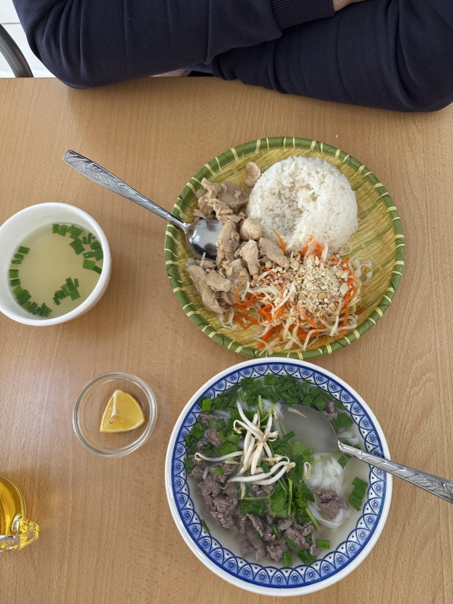
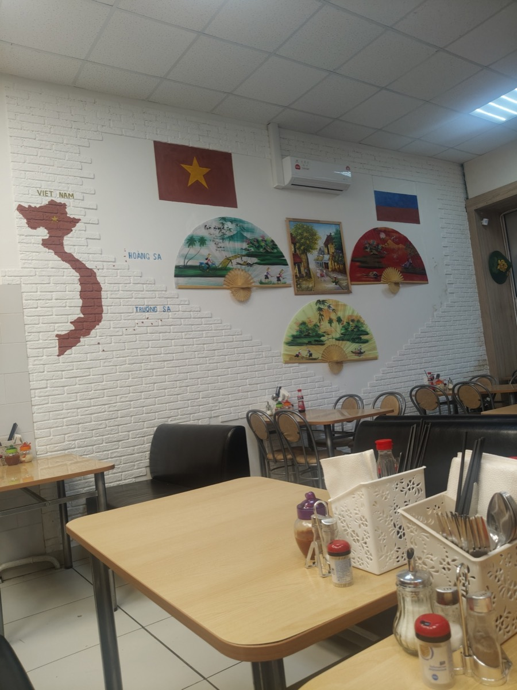
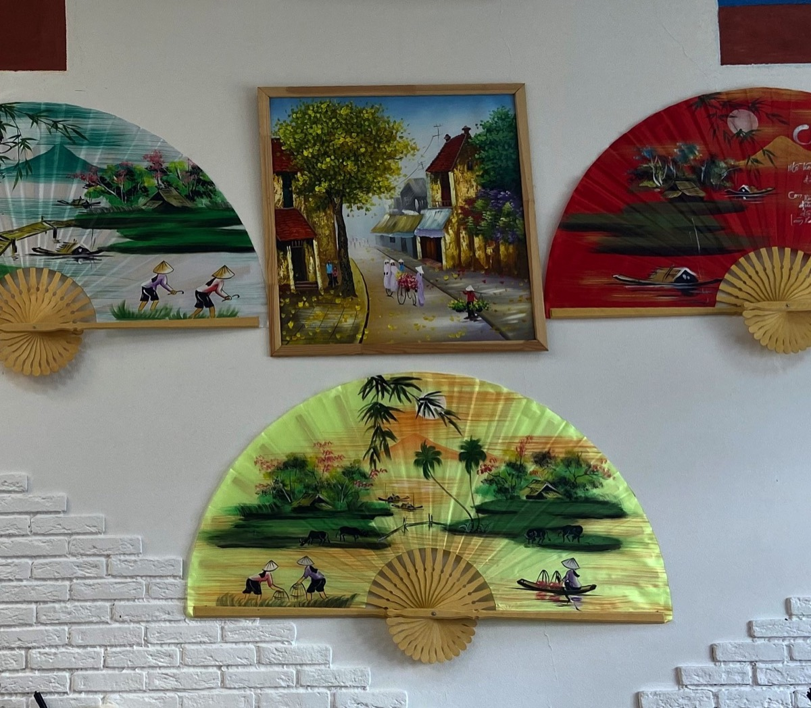
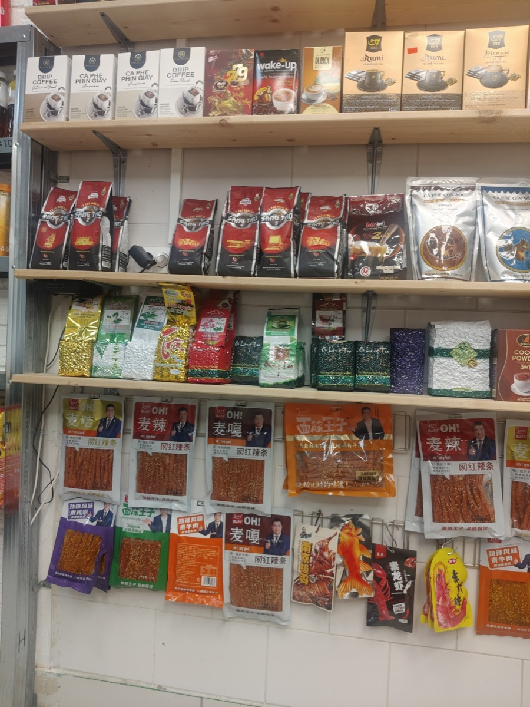
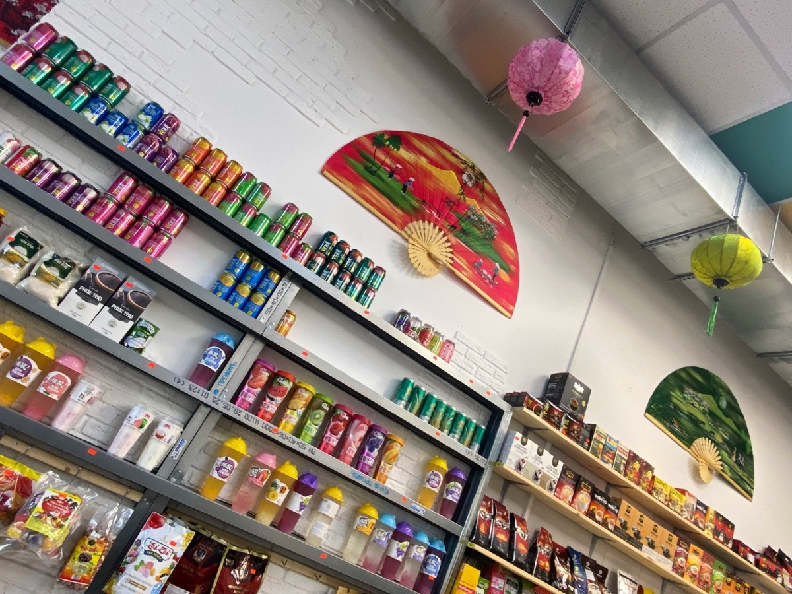
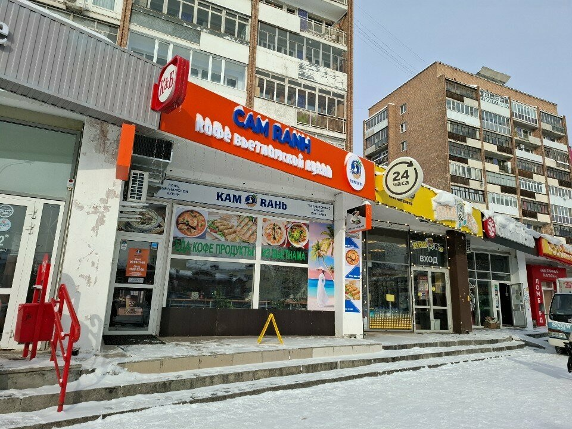

БИЗНЕС-ЛАНЧ
- рис с рыбой
- рис с мясом
- с тофу
- с омлетом

БЛЮДА ОТ ШЕФА
под заказ
Утка, запечённая в духовке по-вьетнамски, рыбный или соевый соус
Курица, пекинская капуста, грибы, соус, бульон. Порция для двоих
Говядина, пекинская капуста, грибы, соус, бульон. Порция для двоих
Креветки, кальмары, пекинская капуста, грибы, соус, бульон. Порция для двоих
Добавки к блюдам лаукурица 250 ₽, говядина 300 ₽, креветки 800 ₽, кальмары 600 ₽, тофу 200 гр. 80 ₽, рисовая лапша 70 гр. 80 ₽, яичная лапша 70 гр. 80 ₽, овощи 300 гр. 70 ₽, грибы 200 гр. 80 ₽, зелёный лук 200 гр. 50 ₽
АТМОСФЕРА КАК В САМОМ ВЬЕТНАМЕ
Василич, отзыв на Яндекс Картах




Детское и постное меню, Wi-Fi, можно с собакой. До 48 мест, проводим банкеты.
Цены - огонь, а порции и качество кухни еще круче!Ольга Еремеева
Во время ожидания блюда - угощают вкусным чаемАнастасия
Мне больше всего нравятся жареные немы. Ребёнок любит том ям. Муж предпочитает фо бо.Ирина Галныкина
Встретили очень гостеприимный, как будто пришли в дом к родным людям.Инкогнито 4262
От души душевно в душу!!!Сибиряк

АДРЕС
Екатеринбург, ул. Челюскинцев, 19, 1 этажМетро «Уральская», 200 м
Вокзал, 450 м
РАБОТАЕМ
Пн–Пт 10:00–22:00Сб–Вс 11:00–23:00